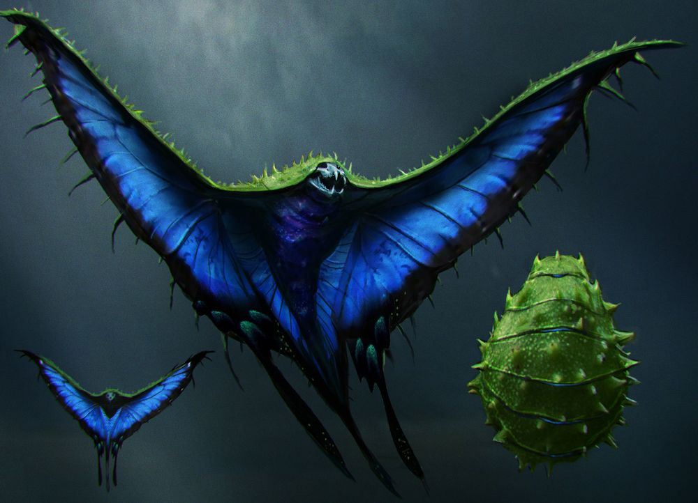

뒤로 가기

가오리같은 체형에 아르마딜로의 것과 유사한 초록색 등갑, 나비같은 화려한 청색 날개, 육식 포유류의 머리뼈를 닮은 얼굴을 지닌 기묘한 비행생물이다.
평소 요요처럼 몸을 작게 말고 있지만, 몸을 펼쳐서 날아다닐 수 있다.
크기는 독수리 정도의 크기로 그리 크진 않지만 매우 위협적인 동물로, 인간의 뇌를 빨아먹는다고 한다.
스우핑 이블의 독은 매우 강한 망각 효과를 지니고 있다.
위험 등급이 5등급으로 매우 위험하지만 뉴트는 아무렇지 않게 활용한다.